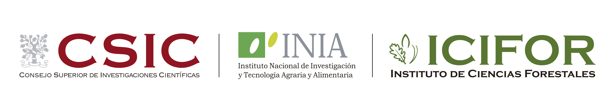

Estructura del Data Paper
Estandarización, documentación y publicación de datos de seguimientos de biodiversidad
Taller GBIF.ES - Sevilla
28-30/10/2025
Componentes del Data Paper


Fuente: University of Basel
dependiente de la temática

dependiente de la temática

dependiente de la revista

dependiente de la revista

Principios FAIR

Muchas Gracias
Ayuda JDC2022-050056-I financiada por MCIN/AEI /10.13039/501100011033 y por la Unión Europea NextGenerationEU/PRTR
